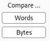

Comparer
Though the naked eye might not notice it, sometimes there are significant and meaningful changes between pairs of requests or pairs of responses.
Burp Suite's Comparer tool can make much quicker and easier work of identifying these, sometimes extremely subtle, changes from one response to the next.
We can compare Words or Bytes between two response/request
